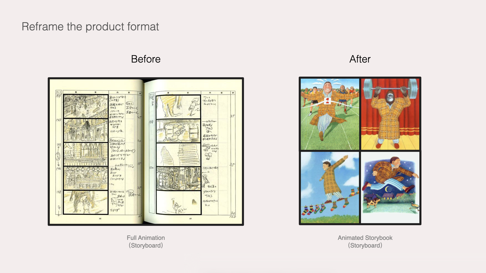
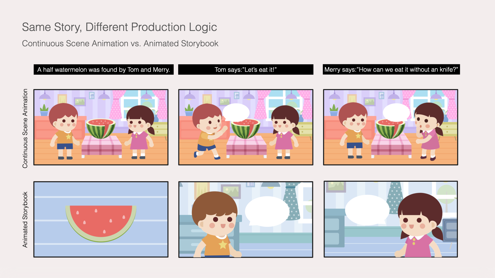
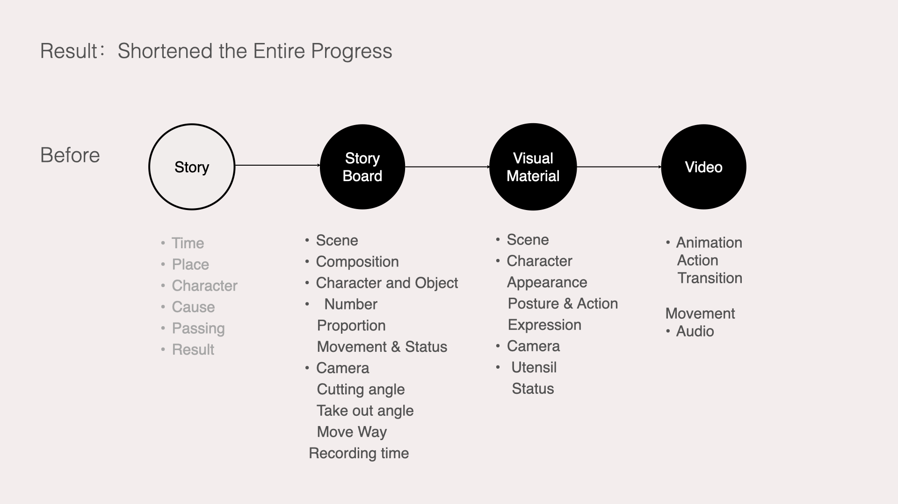
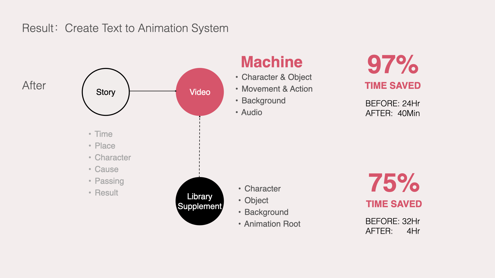
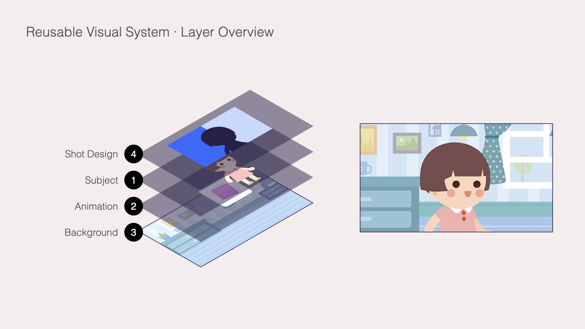
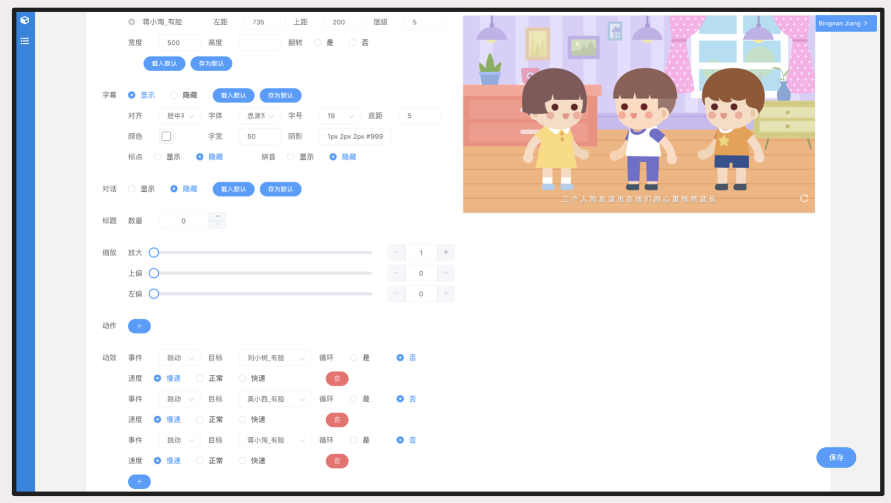

让 AI 真正理解完整故事
模型需要理解物理关系、隐藏信息、跨句指代、人物关系和镜头调度，才可能像导演一样生成连续动画。
- “带着一包烟”和“带着一只狗”具有完全不同的物理关系
- “他、她、他们”跨句后容易失去指代
- 镜头进入、退出与运动依赖完整世界理解
当时无法在发布周期内稳定落地
面对当时尚不成熟的故事理解能力和不可规模化的传统动画方案，我将阶段目标从动画片重新定义为可动绘本，并建立 Story-to-Script、Auto Storyboard 与可复用视觉资产系统，为小冰 C 端 App 持续生产“讲故事”内容。
模型能力与传统制作方式，都无法同时满足发布期限和持续供给。
用有限动效、旁白与模块化画面，重新定义阶段成功标准。
定义故事拆分、规则映射、资产调用与画面组合流程。
完整 Template 库建成、规则与资产流程稳定后的效率。
“小冰讲故事”已经具备将故事文本转为语音的能力。为了进一步吸引儿童用户、增强内容表现力，团队希望在音频基础上加入图像与动画，并将“文本自动生成动画”列为 2019 年发布会能力；我们必须在会前交付真实可运行、可稳定复现的方案。
用户在 App 内播放“小冰讲故事”内容，消费的是最终成片。
系统服务 PM、设计和内容生产流程，而非面向 C 端用户的创作工具。
输入自然语言故事，输出包含画面、动画、旁白和字幕的可动绘本内容。
PM 提供脚本和素材要求；我原本只需要向两位插画师传递需求并确保按时完成。
PM 被脚本撰写占用，插画师持续生产无法复用的一次性素材；开发在负责最终实现的同时，还不得不承担缺少标准的剪辑与大量细碎调整。
我将范围扩大到动画脚本规则、视觉资产系统和端到端流程。
我先判断两条既有路线为什么无法在期限与资源约束内成立，再重新定义用户应该期待的产品形态。
模型需要理解物理关系、隐藏信息、跨句指代、人物关系和镜头调度，才可能像导演一样生成连续动画。
人工完成脚本、分镜、素材、动作和镜头能够控制单条质量，但本质上只是扩大制作团队。
降低对连续表演、复杂物理关系和精确镜头调度的期待；用有限动效、旁白、字幕和模块化画面形成完整叙事。成功标准由“像动画片”变成“真实可运行、结果可预期、内容可持续生产”。


画面必须有明确主体，并匹配该句的动作或状态；相邻画面可以继续使用同一角色。
连续两句话可以共用一个画面；进入第 3 句话时必须切换。
这里先明确每个模块的输入、输出和责任边界；后续两节分别展开语言规则与视觉系统。
待生产的故事文本；视觉阶段还会调用可复用资产库。
拆分、归一、筛选；输出 Scene Context、Subject 与 Action / State。
匹配 Subject asset + Animation type，并补全 Background + Shot Design。
组合视觉资产、动画、字幕与音频。
包含画面、动画、旁白和字幕。
Subject assets · Animation types · Backgrounds
Composition · Position & Scale · Direction · Shot Size · Layering · Transition
我负责 Story-to-Script、Auto Storyboard、视觉资产结构和各模块之间的输入输出。
开发伙伴实现脚本解析、资产调用、合成与 TTS 接入；我们共同用真实故事处理规则例外。


关键发现是：大多数需要处理的表达可以归一为动作或状态两类基础结构。于是问题从“理解完整世界”变成“拆分、归一、筛选和输出”。
Script 只定义“发生什么”；构图、镜头、位置和具体素材由下一阶段的 Auto Storyboard 决定。
按照叙事顺序，把完整故事拆成能够分别处理的原子单元。
将复杂表达转换为动作或状态结构，并补全必要的省略主语。
不是每句话都值得单独生成画面；保留叙事重点，并省略无法稳定表达或信息价值较低的单元。
每个保留单元输出系统稳定执行所需的核心字段。
完成文本拆分、句式归一和可视化筛选，输出稳定的语义字段。
接收 Script 字段，匹配视觉资产，并补全 Script 未定义的画面决策。
脚本自动化之后，如果视觉素材仍按每条故事定制，成本只是被转移给插画师。因此我重新定义素材的生产单位、分类方式和合成规则。

插画师不再为每条故事制作完整成片，而是持续补充能够跨故事调用的视觉资产。
用人物数量、朝向、尺寸、位置、景别和图层关系，约束资产如何组合成稳定画面。
点击查看每一层的变量结构和原始设计证据。
规则只有被系统执行、被例外反复检验，才会成为生产能力。自动化没有覆盖的内容则进入半人工或人工处理，而不是假装系统可以理解一切。
提出可动绘本形态，设计 Story-to-Script、Auto Storyboard、视觉资产结构和验证样例。
实现脚本解析、资产调用、视频合成与 TTS 接入，并与我一起处理规则无法覆盖的例外。

该平台由开发伙伴自行搭建，不是我的 UI 设计交付；它证明构图、图层、字幕和动画规则已被工程化为可调参数。
可动绘本先解决了“能否按时落地”，脚本规则、资产库和工程化流程进一步降低了向 C 端 App 持续供应故事内容的成本。
用有限动效和受约束的语义范围，证明故事可以稳定生成动态内容。
将一次性交付继续发展为可重复使用的内容生产能力。
系统被用于更快完成与当天业务节奏相关的内容生产。
据项目回忆，2019 年正式发布阶段上线约 30–40 条故事内容；准确数量待项目记录确认。
项目阶段记录：从约 24 小时缩短至 40 分钟，自动完成主体、动作、背景、字幕与音频组合。
从约 32 小时缩短至 4 小时；团队集中补充可复用资产，而不是重新制作完整内容。
疫情热点期间，项目记录显示首批内容约 3 小时完成，支持当天发布。
效率数据来自项目阶段记录。本案例仅呈现可公开讨论的项目框架与结果；精确发布会阶段、内容规模与业务渠道待补充确认。
产品形态、内容规则与人工修正必须一起定义，自动化才能从发布会能力发展为稳定的生产系统。
在能力与期限受限时，先明确什么能够按期稳定交付，避免用理想终局判断首版产品。
将故事理解问题转成句式归一、可视化筛选和资产匹配，让系统可以逐步实现与验证。
规则处理高频场景，人工编辑器承接语义歧义和例外，兼顾生产效率与内容质量。
这次项目最终留下的，不只是一批可动绘本，而是一套能够持续生产内容的系统。